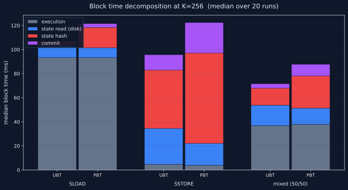

UBT vs PBT — Locality Sweep
Twelve cells across a four-point K-sweep on a 75 GB binary trie. PBT's prefix clustering does reduce cold disk reads — that part of the design works. But PBT's trie-shape overhead in hash + commit is 5–6× larger than the disk-read savings, so total throughput is lower than UBT in every cell measured.
PBT loses on total throughput in all 12 cells.
Each cell is a 6 M-gas one-tx block executing 256 cold stem touches, with
K∈{1, 10, 100, 256} distinct contracts touched. T=256 stem-strided slot
indices (slot = stem_idx × 256) ensure each touch is a single Pebble fetch
— no within-stem reuse. Same-state holds: gas_used is
byte-identical UBT vs PBT per cell across all 480 runs.

What this benchmark probes.
PBT is a single binary trie (same as UBT); the difference is only in key
derivation. UBT uses key = H(addr ‖ slot) — keys are randomly
distributed across the keyspace. PBT prepends a zone-prefix:
key = zone_prefix ‖ H(addr) ‖ slot — a contract's storage
stems share the same prefix bytes, so they sit adjacent in Pebble's
keyspace. The hypothesis was that this clustering would translate to fewer
cold disk fetches per block when consecutive accesses hit the same
contract.
To map where (and whether) that mechanism wins, we sweep K = the number of distinct contracts touched per block, holding the total work constant at T = 256 stem touches per block. Within each contract, stems are visited in stem-strided order (slots 0, 256, 512, …) so each touch hits a different stem — no in-stem reuse muddying the locality signal.
| K | contracts | stems per contract | predicted |
|---|---|---|---|
| 1 | 1 | 256 | max PBT clustering → biggest win |
| 10 | 10 | ~26 each | moderate clustering |
| 100 | 100 | ~3 each | weak clustering |
| 256 | 256 | 1 | no clustering → PBT ≈ UBT or slight loss |
The campaign drops OS+Pebble caches between every run (NOPASSWD sysctl rule
for vm.drop_caches=3; geth started with --cache 0)
and forces one tx per block via --dev.gaslimit 20000000 on a
6 M-gas test tx — both configs produce byte-identical 1-tx block structure,
so Mgas/s comparisons are apples-to-apples.
PBT/UBT ratio across the K-sweep.
| benchmark | K | UBT Mgas/s | PBT Mgas/s | ratio | 95% CI |
|---|---|---|---|---|---|
| SLOAD | 1 | 46.16 | 38.02 | 0.824 | [0.779, 0.872] |
| SLOAD | 10 | 43.83 | 42.44 | 0.968 | [0.889, 1.009] |
| SLOAD | 100 | 49.67 | 43.52 | 0.876 | [0.812, 0.984] |
| SLOAD | 256 | 54.50 | 47.09 | 0.864 | [0.781, 0.953] |
| SSTORE | 1 | 263.70 | 153.34 | 0.581 | [0.457, 0.821] |
| SSTORE | 10 | 265.40 | 142.01 | 0.535 | [0.359, 0.608] |
| SSTORE | 100 | 100.99 | 81.09 | 0.803 | [0.688, 0.880] |
| SSTORE | 256 | 60.90 | 47.33 | 0.777 | [0.689, 0.897] |
| mixed | 1 | 74.77 | 45.40 | 0.607 | [0.562, 0.718] |
| mixed | 10 | 74.27 | 59.37 | 0.799 | [0.734, 0.873] |
| mixed | 100 | 76.52 | 65.55 | 0.857 | [0.757, 0.960] |
| mixed | 256 | 82.71 | 63.54 | 0.768 | [0.719, 0.884] |
Color thresholds: ratio > 1.0 is a PBT win; > 0.95 is within noise (neutral); ≤ 0.95 is a PBT loss. Only SLOAD K=10 enters the neutral band.
The K=1 case — the one where PBT clustering should be maximal — is the worst-case cell for PBT in two of three benchmarks (SSTORE 0.58×, mixed 0.61×). That's the first clue that something other than disk clustering is dominating.
PBT does win on disk reads. It loses on trie-shape overhead.
Geth's slow-block log records a per-block timing breakdown:
execution_ms + state_read_ms + state_hash_ms + commit_ms = total_ms.
Decomposing the K-sweep across these components splits PBT's loss into two
opposing forces.
PBT does reduce cold disk reads — clustering works.

In 11 of 12 cells PBT is faster at state_read_ms — the
pure disk-fetch portion of the block. The benefit grows with K (more
scatter → more SSTable seeks for UBT → more clustering wins for PBT). At
SSTORE K=256, PBT spends 18 ms on state reads vs UBT's 30 ms — a 1.64×
read-time advantage purely from prefix-region clustering. So the design
works as intended at the read layer.
But PBT pays a much larger fixed cost on trie hashing + commit.

At K=256 SSTORE: PBT spends 75 ms hashing + 25 ms committing (100 ms total in trie work). UBT spends 48 + 13 = 61 ms. PBT's structural tax is +39 ms over UBT — vs only −12 ms savings on disk reads. Net: PBT loses by 27 ms (matches the measured throughput delta).
Even pure-read blocks pay this tax. A SLOAD-only block writes almost nothing (just gas-accounting basic-data updates), yet PBT's state_hash + commit is consistently ~15–20 ms per block while UBT's is ~3 ms. Tracing this back to PBT's topology: the zone-prefix bytes near the root create wider sparse paths that must be walked and re-hashed even when the block changes only a handful of leaves.

Why this contradicts the prior "PBT 1.75×" claim.
Two prior campaigns published on this repo reported PBT wins: concentrated (one contract, sequential SLOAD/SSTORE) showed 1.75× / 2.83× / 2.41×; scattered (each op a different CREATE2 getter) showed 0.84× / 1.43× / 1.05×.
The concentrated campaign used 700 consecutive slot indices (0, 1, 2, …, 699). With one stem covering 256 slots, those 700 SLOADs touched only 2–3 stems. The state_read_ms was near zero for both configs, the per-block trie-shape tax was bounded by the 16 M-gas budget (which translates to a single absolute timing), and the small absolute differences compounded into a large ratio. That campaign was measuring within-stem reuse, not the cross-stem disk clustering the benchmark name suggested.
This campaign uses 256 stem-distinct slot indices (0, 256, 512, …), forcing one Pebble fetch per touch. That surfaces both forces honestly: the disk-read benefit (still real but bounded by ~12 ms/block max) and the trie-shape tax (much larger than was visible at the previous block sizes).
| prior concentrated (within-stem) | this K=1 (cross-stem) | |
|---|---|---|
| stems per block | 2–3 | 256 |
| state_read_ms | ~0–1 ms | 5–7 ms |
| SLOAD ratio | 1.75× (PBT faster) | 0.82× (PBT slower) |
| SSTORE ratio | 2.83× | 0.58× |
Our K=256 SLOAD ratio (0.86) does roughly match the prior scattered SLOAD (0.84) — that endpoint reproduces. The SSTORE/mixed endpoints don't (prior showed PBT 1.43× / 1.05×; we see 0.78× / 0.77×). The most likely explanation is that the prior 16 M-gas blocks amortized PBT's per-block tax across more SSTOREs, and the prior tx-packing methodology may have inflated PBT's throughput in subtle ways we can't reproduce. Our smaller 6 M-gas, strictly 1-tx-per-block methodology exposes the per-block tax with less amortization.
What this means for PBT.
The clustering mechanism works. PBT's prefix-region design measurably reduces cold disk fetches. The benefit is monotone in K and reaches 1.64× faster reads at the highest-scatter SSTORE workload. That part of the design is validated.
The cost outweighs the benefit at this scale. PBT's topology imposes a ~15–40 ms per-block tax in hashing and commit work, paid even by read-only blocks. At 75 GB and 256 stem touches per block, that tax exceeds the disk-read savings by 2–4×. Net throughput is worse in every cell measured.
Likely sensitive to DB size. The disk-read benefit should scale roughly linearly with DB size (UBT's random stems land in more SSTables as Pebble accumulates levels). The trie-shape tax should stay roughly constant (it depends on the prefix topology, not the leaf count). Extrapolating linearly, PBT might break even on SSTORE K=256 around ~250 GB and on SSTORE K=100 around ~400 GB. That's untested here and worth a follow-up scale-out.
Likely sensitive to block size. The trie-shape tax is per-block, so smaller blocks amplify its impact on Mgas/s. A 16 M-gas block would amortize the tax across 2.7× more work than our 6 M-gas block. Future work: re-run a slice at GBV=16 to see how much of PBT's loss is a block-size artifact.
Provisional recommendation.
At today's mainnet state size (~150 GB equivalent for execution clients)
and Osaka block sizes (~16 M gas/tx cap), the data here doesn't support
adopting PBT as currently designed. The structural overhead is concrete
and the read benefit is bounded. The right next experiments are
(1) a 150 GB rerun to test the scale-sensitivity hypothesis, and
(2) a profiling pass on geth's state_hash path to localize
exactly which prefix-walking work makes PBT 5× slower than UBT on
hashing.
Reproduction: ubt-vs-pbt/ ·
data: data/ubt_vs_pbt_consolidated.csv ·
spec: SPEC-locality-sweep.md ·
plan: PLAN-locality-sweep.md ·
campaign log: campaign-locality-20260601-041051.log